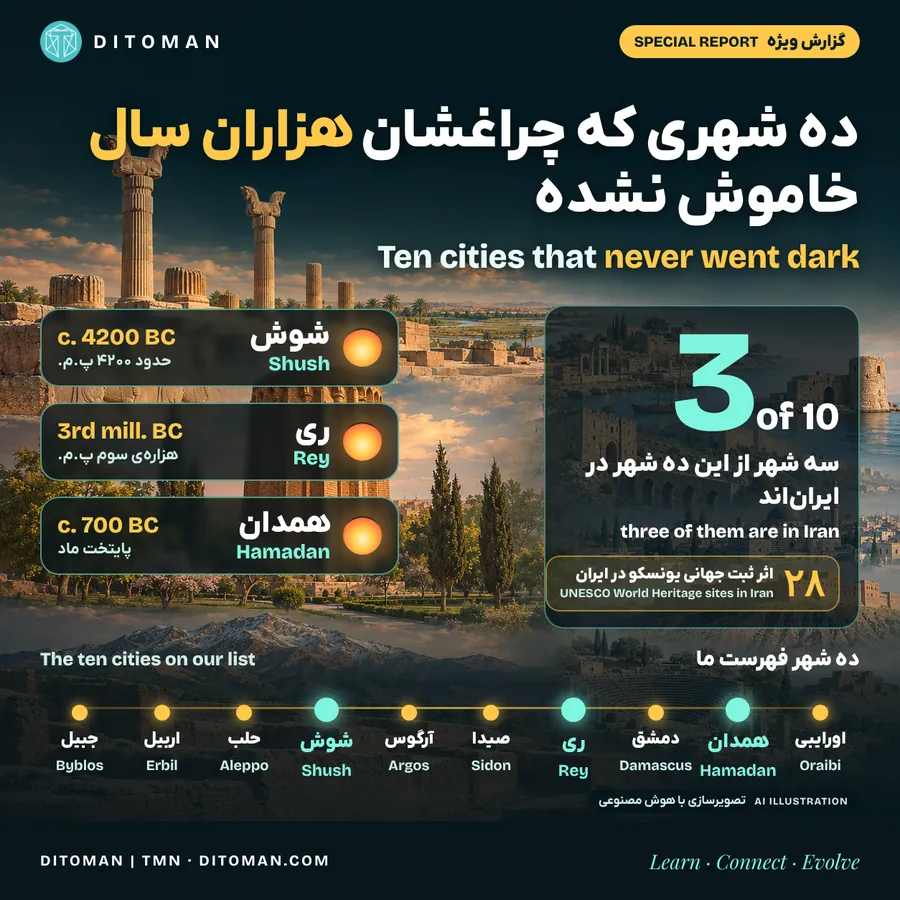
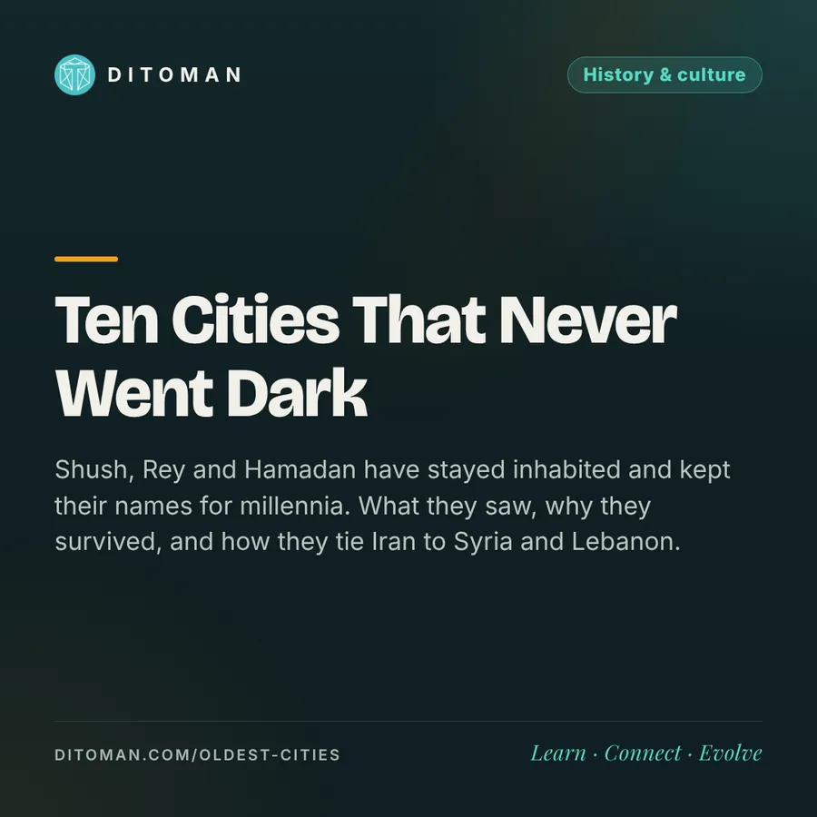

ده شهری که چراغشان هزاران سال خاموش نشده؛ سه تا در ایران
Ten cities that never went dark, three of them in Iran
Shush, Rey and Hamadan have stayed inhabited and kept their names for millennia. What they saw, why they survived, and how they tie Iran to Syria and Lebanon.
شوش، ری و همدان هزاران سال مسکونی ماندهاند و نامشان را نگه داشتهاند. چه دیدهاند، چرا ماندند و چه پیوندی میان ایران، شام و لبنان ساختهاند.
در فهرست ده شهری که هزاران سال پیوسته مسکونی ماندهاند و هنوز همان نام کهن را دارند، سه نام ایرانی است: شوش، ری و همدان. هیچ کشور دیگری در این فهرست بیش از دو شهر ندارد.
شوش از حدود ۶۲۰۰ سال پیش شهر بوده. ری در اوستا با نام «رَغا» آمده. همدان همان «هگمتانه» است، پایتخت مادها. هر سه امروز شهرهای زندهاند: مردم در آنها کار میکنند، مدرسه میروند و خانه میسازند. این گزارش را با هم دنبال میکنیم: این شهرها چه دیدهاند، چرا ماندند، و این تاریخ چه پیوندی میان ایران و شهرهای کهن شام و لبنان ساخته است.
معیار ما
هیچ شهری هزاران سال بدون تغییر نمانده. ما شهرهایی را انتخاب کردیم که دو چیز را نگه داشتهاند: سکونت تقریباً پیوسته و ریشهی نامشان. این فهرست «ده شهر اول دنیا» نیست؛ رتبهبندی رسمی برای قدیمیترین شهرها وجود ندارد و تاریخها بر پایهی کاوشها تخمینیاند. شهرهایی که نامشان عوض شده (مثل پلوودیو یا شیان) یا امروز خالیاند (مثل شهر سوخته) در فهرست نیستند. اریحا را هم به دلیل اختلاف بر سر پیوستگی سکونت در محوطهی باستانی کنار گذاشتیم.
۰۱. فهرست ده شهر
| شهر | کشور | آغاز سکونت یا نخستین نام | مسیر نام |
|---|---|---|---|
| جُبیل (بیبلوس) | لبنان | دستکم ۵۰۰۰ پ.م. | گوبلا ← جبیل |
| اربیل | عراق | هزارهی پنجم پ.م. | ایربیلوم ← اربلا ← اربیل |
| حلب | سوریه | حدود ۴۳۰۰ پ.م. | حلب (از لوحهای ابلا) |
| شوش | ایران | حدود ۴۲۰۰ پ.م. | شوشون ← شوشان ← شوش |
| آرگوس | یونان | حدود ۷۰۰۰ سال پیش | آرگوس |
| صیدا | لبنان | حدود ۳۲۰۰ پ.م. | صیدون ← صیدا |
| ری | ایران | هزارهی سوم پ.م. | رَغا ← ری |
| دمشق | سوریه | نخستین نام: قرن ۱۵ پ.م. | تمشق ← دمشق |
| همدان | ایران | پایتخت ماد، حدود ۷۰۰ پ.م. | هگمتانه ← همدان |
| اورایبی | آمریکا | پیش از ۱۱۰۰ م. | اورَیوی |
۰۲. سه شهر ایرانی
شوش: سکونت پیوسته در آن از حدود ۴۳۹۵ پیش از میلاد ثبت شده و حدود ۴۲۰۰ پیش از میلاد به شهر تبدیل شد WHE. پایتخت ایلام بود و بعد یکی از پایتختهای هخامنشیان. ایلامیها آن را «شوشون» مینامیدند و عبریها «شوشان». آرامگاه منسوب به دانیال نبی هم در شوش است. یونسکو آن را در ۲۰۱۵ ثبت کرد. یک نکتهی منصفانه: شوش از قرن ۱۵ تا ۲۰ میلادی به سکونتگاهی کوچک تبدیل شده بود World Heritage Site.
ری: سکونت در آن از هزارهی سوم پیش از میلاد شروع شده و در اوستا جایی مقدس به نام «رَغا» است. در دورهی اشکانی پایتخت بود و در قرن هشتم میلادی در غرب آسیا فقط با دمشق و بغداد رقابت میکرد. در ۱۲۲۰ میلادی مغولها آن را تقریباً از بین بردند و بیشتر بازماندگان به تهران رفتند، ولی نام ری در «شهر ری» زنده ماند Britannica.
همدان: مادها آن را ساختند و هرودوت از آن بهعنوان پایتخت ماد یاد کرده است. نام فارسی باستان آن «هگمتانه» بود و یونانیها «اکباتان» میگفتند. امروز بیش از ۵۵۰ هزار نفر جمعیت دارد Wikipedia. در همین شهر، آرامگاه ابنسینا و آرامگاه منسوب به اِستر و مردخای در فاصلهای کوتاه از هم قرار دارند. آرامگاه استر و مردخای مهمترین زیارتگاه یهودیان و مسیحیان ایران است Wikipedia.
ایران فقط همین سه شهر را ندارد: چغازنبیل و شهر سوخته هم در فهرست میراث جهانی یونسکو هستند، ولی امروز مسکونی نیستند. تفاوت شوش، ری و همدان این است که زندگی در آنها ادامه پیدا کرده.
۰۳. اوج و فرود: سه شهر در ۶۰۰۰ سال
این شهرها همیشه بزرگ نبودهاند. بارها پایتخت شدهاند، کوچک شدهاند و دوباره برخاستهاند. نمودار زیر خلاصهی این مسیر است (تحلیل دیتومان بر پایهی منابع همین گزارش؛ مرزها تقریبیاند):
پایتخت · شهر فعال · روستا یا ویرانهی نیمهمسکونی
- شوش: پایتخت ایلام، بعد پایتخت هخامنشی. از قرن ۱۵ تا ۲۰ میلادی به روستایی کوچک کنار تپههای باستانی تبدیل شد. حالا دوباره رشد میکند: جمعیت شهر از ۵۳٬۸۹۷ نفر در ۱۳۸۵ به ۷۷٬۱۴۸ نفر در ۱۳۹۵ رسید، یعنی حدود ۴۳٪ رشد در ده سال Wikipedia.
- ری: پایتخت اشکانی؛ در قرنهای ۱۰ و ۱۱ میلادی پایتخت آلبویه و سلجوقیان. جیهانی نوشته میان عراق و نیشابور شهری بزرگتر از ری نبود و کتابخانهی صاحب بن عباد را با بار چهار هزار شتر توصیف کردهاند WikiShia. حملهی مغول و بعد تیمور آن را ویران کرد. ولی ری برگشت: نخستین راهآهن ایران (۱۲۶۵ تا ۱۲۶۷ خورشیدی) تهران را به ری وصل کرد و امروز منطقهی ۲۰ تهران با صدها هزار نفر جمعیت است Wikipedia.
- همدان: پایتخت ماد، بعد پایتخت تابستانی هخامنشیان، و در قرن یازدهم میلادی محل کار و درس ابنسینا. برخلاف شوش و ری، هیچوقت به روستا تبدیل نشد. امروز بیش از ۵۵۰ هزار نفر جمعیت دارد و تپهی هگمتانه در ۱۴۰۳ (ژوئیهی ۲۰۲۴) بیستوهشتمین اثر ایران در فهرست میراث جهانی یونسکو شد Intellinews.
۰۴. چرا این شهرها ماندند؟
تحلیل دیتومان: شهرهایی که هزاران سال دوام آوردهاند معمولاً سه چیز داشتهاند:
- آب قابل اتکا: شوش کنار رود کرخه و دز، ری و همدان در دامنهی کوهها و با چشمه و قنات. قنات ایرانی خودش در ۲۰۱۶ در فهرست یونسکو ثبت شد.
- جایگاهی روی راهها: ری و همدان روی مسیری بودند که بعدها جادهی ابریشم نام گرفت، و شوش سر «راه شاهی» هخامنشی بود.
- پذیرفتن تنوع: شوش ایلامی، پارسی، یونانی و یهودی را در خود جا داد. در همدان آرامگاه ابنسینا و زیارتگاه استر و مردخای کنار هم ماندهاند. شهری که مردم گوناگون را نگه میدارد، بعد از هر ویرانی دوباره ساخته میشود.
۰۵. همسایههای جنوبی
کرانهی جنوبی خلیج فارس هم تمدن کهن دارد: دیلمون در بحرین حدود ۲۳۰۰ پیش از میلاد پایتخت داشت و یونسکو قلعهی بحرین را در ۲۰۰۵ ثبت کرد Wikipedia. ولی شهرهای اصلی امروز این کشورها جواناند:
| کشور | ردّ باستانی | شهر امروز |
|---|---|---|
| بحرین (قلعهی بحرین) | حدود ۲۳۰۰ پ.م.؛ پایتخت دیلمون | منامه شهری جدیدتر است |
| کویت | جزیرهی فیلکه سکونتگاه باستانی دارد | شهر کویت: ۱۶۱۳ م. |
| ابوظبی | سکونت در منطقه از عصر مفرغ | شهر ابوظبی: ۱۷۶۱ م. |
| دبی | سکونت در منطقه از حدود ۳۰۰۰ پ.م. | شهر دبی: ۱۸۳۳ م. |
| دوحه | نخستین اشاره به البدع: ۱۶۸۱ م. | شهر دوحه: دههی ۱۸۲۰ م. |
این مقایسه برتری یک ملت بر ملت دیگر نیست؛ بیشتر به جغرافیا برمیگردد. کمبود آب شیرین در کرانهی جنوبی، سکونتگاهها را کوچک و جابهجاشونده نگه داشت، تا اینکه مروارید، تجارت و بعد نفت شهرهای بزرگ ساخت. همین شهرهای جوان امروز با سرعت زیادی در موزه و مرمت میراث کهن خود سرمایهگذاری میکنند.
بحرین بعدها در دورهی ساسانی و دوباره از ۱۶۲۲ تا ۱۷۸۳ بخشی از قلمرو ایران بود. در ۱۹۷۰، پس از نظرسنجی سازمان ملل که به درخواست ایران انجام شد، راه استقلالش باز شد و ایران در ۱۹۷۱ از نخستین کشورهایی بود که آن را به رسمیت شناخت Iranica · Iran Chamber.
۰۶. ایران، شام و لبنان: ۲۵۰۰ سال پیوند
چهار شهر دیگر فهرست، یعنی جبیل، صیدا، دمشق و حلب، در سوریه و لبنان امروز هستند. پیوند این شهرها با ایران به پیش از اسلام برمیگردد و بیشتر از جنس اداره، خط، تجارت و دانش است:
- یک ساتراپی مشترک: کوروش در ۵۳۹ پیش از میلاد بابل را گرفت. سرزمینهای غرب فرات، از جمله شام و فنیقیه، ساتراپی «آن سوی رود» شدند. شاهان محلی صور، صیدا، جبیل و ارواد سر کار ماندند و زیر نظر ساتراپ پارسی حکومت کردند Iranica.
- ناوگان فنیقی: صیدا و جبیل دو بندر دریایی شاهنشاهی هخامنشی بودند و ملوانان صیدا در ناوگان پارسی میجنگیدند. در صیدا یک «پردیس» شاهی بود و معبد اشمون در دورهی پارسی بزرگ شد Livius. واژهی انگلیسی paradise از همین «پردیس» پارسی باستان آمده است Scroll.
- خطی که از شام آمد: آرامیها دولتشهرهایی پیرامون حلب و دمشق ساختند و زبانشان را تا بینالنهرین بردند. هخامنشیان آن را زبان اداری کل شاهنشاهی کردند. خط پهلوی هم از الفبای آرامی گرفته شد، و آرامی خودش از الفبای فنیقی آمده بود Iranica. یعنی خطی که ایرانیان قرنها با آن نوشتند، ریشه در فنیقیه و شام دارد.
- دانشمندی از بعلبک: شیخ بهایی در ۱۵۴۷ نزدیک بعلبک لبنان به دنیا آمد و کودک بود که خانوادهاش به ایران آمدند. او را طراح ایدهی شهری میدان نقش جهان اصفهان میدانند و کتاب حسابش تا قرن نوزدهم در جهان اسلام درس داده میشد Wikipedia. در دورهی صفوی دهها عالم از جبل عامل لبنان در ایران کار کردند Iranian Studies.
این پیوندها به حکومتهای امروز ربطی ندارد. از جنس شهرهایی است که هزاران سال با هم تجارت کردهاند، خطشان را از هم گرفتهاند و دانشمندانشان میان آنها رفتوآمد داشتهاند.
۰۷. بقیهی فهرست
- جبیل: دستکم از ۵۰۰۰ پیش از میلاد مسکونی است. واژهی Bible از نام یونانی همین شهر آمده، چون پاپیروس از بندر آن به یونان میرسید Wikipedia.
- اربیل: سکونت در آن به هزارهی پنجم پیش از میلاد میرسد. در ۲۰۰۷، برای مرمت قلعه، ۸۴۰ خانواده از آن رفتند، ولی به یک خانواده اجازه دادند بماند تا رکورد سکونت پیوسته قطع نشود Wikipedia.
- حلب: نام «حلب» از اواخر هزارهی سوم پیش از میلاد در لوحهای ابلا ثبت شده Britannica.
- آرگوس: حدود ۷۰۰۰ سال پیوسته مسکونی بوده؛ تئاتر باستانیاش ۲۰ هزار جا داشت Wikipedia.
- صیدا: لایههای عصر مفرغ آن به حدود ۳۲۰۰ پیش از میلاد میرسد و به رنگ ارغوانی و شیشهگری شهرت داشت Wikipedia.
- دمشق: نخستین بار در فهرستی مصری از دورهی تحتمس سوم (قرن ۱۵ پیش از میلاد) نام برده شده Livius.
- اورایبی: روستای هوپیها در آریزونا، پیش از ۱۱۰۰ میلادی ساخته شده و احتمالاً قدیمیترین سکونتگاه پیوستهی آمریکاست Wikipedia.
پورتو، که بسیاری از ایرانیان پرتغال در آن زندگی میکنند، حدود ۲۲۰۰ تا ۲۸۰۰ سال قدمت دارد و به این فهرست نمیرسد؛ ولی نام رومیاش «پورتوس کاله» احتمالاً نام پرتغال را ساخته است Wikipedia.
۰۸. این پیشینه امروز به چه کار میآید؟
تحلیل دیتومان: شهر کهن فقط خاطره نیست؛ سرمایه است:
- گردشگری و شغل: ایران ۲۸ اثر ثبت جهانی یونسکو دارد و تازهترینش، هگمتانه، در قلب همدان است. هر اثر ثبتشده برای راهنمای محلی، اقامتگاه، صنایع دستی و رستوران مشتری میآورد.
- دانش و پژوهش: تپههای شوش و ری هنوز هزاران سال لایهی کاوشنشده دارند. باستانشناسی، مرمت و موزهداری شغلهای تخصصیاند که فقط در چنین شهرهایی معنی دارند.
- پل فرهنگی: پیوند خط، زبان و دانش با شام، لبنان، عراق و خلیج فارس زمینهی همکاری علمی و فرهنگی و گردشگری مشترک است، فراتر از سیاست روز.
- اعتماد به بازسازی: شوش از روستایی کوچک دوباره شهری ۷۷ هزار نفره شد و ری بعد از ویرانی کامل به بخشی از پایتخت تبدیل شد. این تاریخ نشان میدهد ویرانی پایان کار نیست.
۰۹. نگاه دیتومان
سه شهر از ده شهری که هم زنده ماندند و هم نامشان را نگه داشتند در ایراناند. این عدد دربارهی گذشته است، ولی پیامش برای امروز است: سرزمینی که هزاران سال با کمآبی، جنگ و زلزله کنار آمده، راه بازسازی را بلد است. پیوند این شهرها با جبیل، صیدا، حلب و دمشق هم یادآوری میکند که خط، دانش و تجارت این منطقه همیشه مشترک بوده. این پیوندها را با هم دنبال میکنیم.
منابع
- شوش: World History Encyclopedia · worldheritagesite.org · فهرست شهرهای کهن: worldheritagesite.org
- ری: Britannica · همدان: Wikipedia · آرامگاه استر و مردخای: Wikipedia
- جبیل: Wikipedia · اربیل: Wikipedia · Wikipedia · حلب: Britannica
- آرگوس: Wikipedia · صیدا: Wikipedia · دمشق: Livius · اورایبی: Wikipedia · پورتو: Wikipedia
- بحرین و ایران: Iranica · Iran Chamber · هگمتانه: Intellinews · جمعیت شوش: Wikipedia · ری: WikiShia · Wikipedia
- خلیج فارس: قلعهی بحرین · کویت · دوحه · ابوظبی · دبی
- ایران و شام: Iranica، Eber-Nari · Livius، صیدا · Iranica، آرامی · Scroll، پردیس · شیخ بهایی · Iranian Studies
آخرین بازبینی: ۱۹ آبان ۱۴۰۵. تاریخهای باستانی تخمینیاند و منابع گاهی اختلاف دارند.